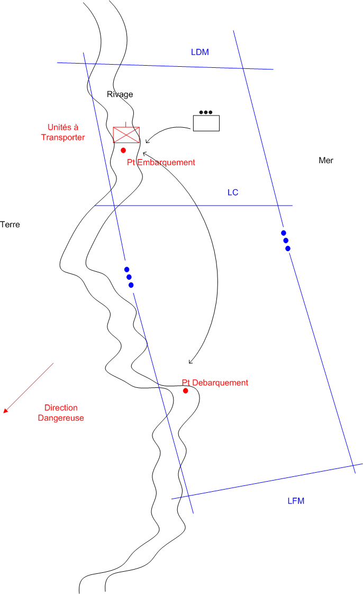

NIVEAU : Pion
ARME : Joint
MISSION : MARINE Transporter
NIVEAU : Pion
ARME : Joint
MISSION : MARINE Transporter
Schéma de modélisationMARINE Transporter |
Paramètres obligatoiresFuseau : Limite gauche / Limite droiteZone de responsabilité. Direction Dangereuse Orientation privilégiée des capteurs lors de bond ou de reconnaissance de points. Unites a transporter Liste de(s) unité(s) à transporter. Dans le cas ou l'on souhaite transporter une compagnie entière, et si son automate de commandement est embrayé, alors, il suffit de passer en paramètre son PC. Point embarquement Point à partir duquel on compte embarquer les unités à héliporter. Point Debarquement Point où l'on compte débarquer les unités à héliporter. Avec materiel Permet de définir si l'on souhaite embarquer le matériel disponible dans l'unité à héliporter. |
|
Paramètres optionnelsLignes de coordination [LC]Lignes de début et fin de mission [LDM/LFM] |
||
 |
Fiches missions |  |